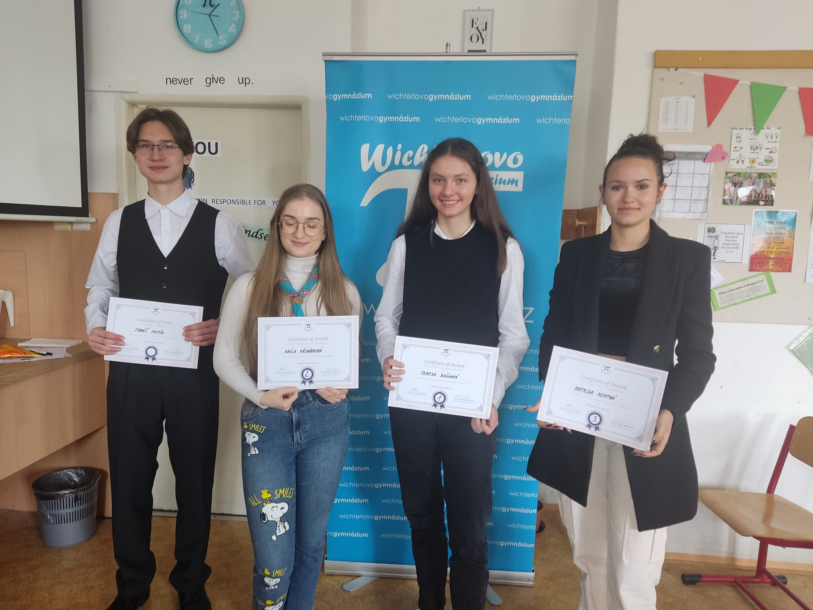

- Absolvent prvního ročníku studia kytary na Základní umělecká škola Pavla Josefa Vejvanovského, Hlučín, příspěvková organizace
- Založení rockové kapely The Apollos
Více v hudba
Více v hudba
Aktuálně pracuji pro dvě firmy jako správce webových stránek a technická podpora.
Pro neziskovou organizaci bridge of Ukraine pracuji jako správce webových stránek a taky jako technická podpora. Webové stránky původně byli stavěny přes framework hugo. V nynější době už fungují na wordpress, protože webové stránky musí být jednoduše upravitelné i pro mého nástupce
Bridge of ukraine je nezisková organizace, která pomáhá lidem na Ukrajině. Provádí sbírky různého druhu a provádějí výjezdy na Ukrajinu.
Pro tuto školu dělám správce webových stránek. Většinu práce zde provádím přes redakční systém
Základní Škola Kozmice je škola, na které jsem byl i já žákem. Je to skvělá menší škola, která dělá co se dá pro jejich žáky.
Jako pracovník na volné noze jsem asi rok a půl pracoval na Fiverru. Co zde za mě stojí za zmínku je moje práce, kdy jsem spolupracoval s Irským studentem na webové aplikaci. Pracoval jsem zde na celé části vývoje od backendu, přes databázi až na frontend. Využíval jsem zde PHP, MySQL, python, Javu a další. Tato práce my dala spoustu zkušeností a trochu jiný pohled na programování.
Pár menší projektů jsem stavěl v Unity. Například hru na téma backrooms, kde byla práce s procedurální generací bludiště. Žádný můj projekt v Unity jsem, ale zatím nikdy nepublikoval.
Nyní díky praxím na Střední průmyslové škole elektrotechniky a informatiky jsem dostal příležitost přidat se a dělat na projektu v Unreal Engine.
Když dojde k tomu že se doopravdy nudím stává se, že i maluji. Osobně se mi moje obrázky moc nelíbí a vidím v tom je čmáranice, ale pár z mých obrázků se i umístilo na výtvarných soutěží

Díky skvělým učitelům jsem měl šanci účastnit se spousty soutěží a olympiád.
| Typ soutěže | Rok účasti | Úspěšný řešitel | Poznámka |
|---|---|---|---|
| Matematická olympiáda | 2018 - 2022 | Minimálně úspěšný řešitel | Úspěšný řešitel i krajského kola |
| Olympiáda z Českého Jazyka | 2021, 2022 | 20 z 40 | |
| Soutěž v prezentování v anglickém jazyce | 2023 | Ocenění za nejvíc vědeckou prezentaci | Moje téma: Kvantové počítače |
| Atletické mistrovství Hlučínska | 2021 - 2023 | druhé místo ve štafetě | |
| Geošifra | 2022 | 10. místo |
Mimo těchto pár soutěží toho bylo mnohem víc, ale buď to nestojí za zmínku, nebo jsem se neumístil.
